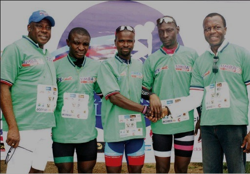

Bicycle riders from all over Nigeria are expected to converge in Lagos for the independence edition of the annual Cycling Lagos Tournament that will be in October 2023.
The cycling tournament is currently scheduled to hold from the 21st to the 28th of October this year.
Nigerian cyclists are all invited to the challenge of the .
 From left to right of image: Major General Shina Ogunbiyi. Rtd (left); First runner-up of Cycling Lagos 2018, Fasima Samual; Winner of the Cycling Lagos first edition, Ajibade Quadri; Second runner-up, Afeez Bakare; Chairman, Cycling Lagos, Mr. Soji Adeleye during the grand finale of the Cycling Lagos First Edition.
The theme for this year's event is Greener Cycling, partly inspired by the vision of the Lagos state government to reduce carbon emissions in the state as part of efforts to address climate change.
The second edition of Cycling Lagos is a 120 km ride, almost twice that of the first edition that lasted 65km.
The race will also come in five categories and will feature:
The professional cyclists are expected to cover the full 120 kilometers, starting from the Teslim Balogun Stadium to Antony, through the Third mainland bridge to Ajah and then back to the Teslim Balogun Stadium.
The Lagos State Sports Commission has promised to provide for all the technical aspects that will be in need for the event as the director of the commission noted.
The winner and first runner-up of the first edition, Quadri Ajebadi and Afeez Bakare respectively are not expected to defend their titles this year which may present newer chances for cyclists all over the state and country to grab the opportunity to establish themselves in the Nigeria cycling space.
As usual, Nigeria Cycling Embassy will be publishing tips to make sure that you are fully prepared to take the opportunity present in this event.
See you soon!